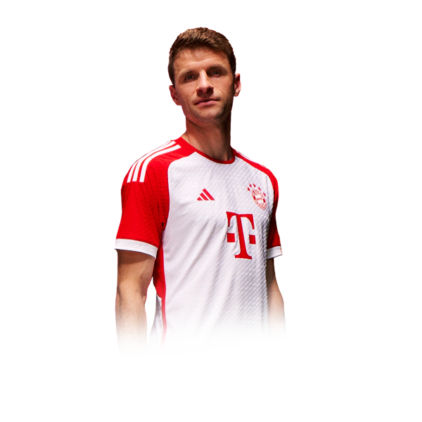
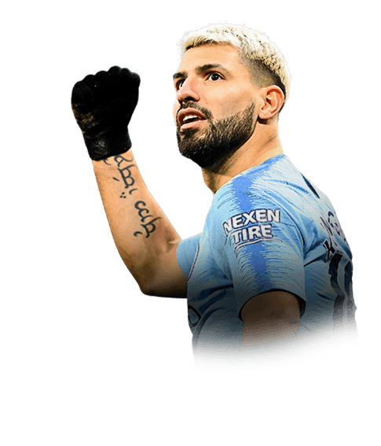

Locos Por El Futbol
leyendas
Una leyenda del fútbol es un jugador que ha dejado una huella imborrable en la historia del deporte. Su grandeza se manifiesta en su habilidad, visión de juego, capacidad goleadora y en la magia que produce en la cancha.
A continuacion apareceran ciertas leyendas:
Thomas Müller (Leyenda del Bayern-Munich)
-Es el jugador con más apariciones en el Bayern Múnich.
-Ha ganado 32 trofeos con el club, entre ellos 12 títulos de Bundesliga y dos Champions League.
-Es uno de los futbolistas alemanes más laureados de la historia.
-También fue campeón del mundo en el Mundial de Brasil 2014.
Lionel Messi(Leyenda del FC Barcelona)

-Es el jugador con más partidos jugados en la historia del Barcelona, con 778 partidos oficiales.
-Es el máximo goleador de la historia del Barcelona.
-Es el jugador que más trofeos ha ganado en el Barcelona.
-Ha ganado 10 Ligas, 7 Copas del Rey, 8 Supercopas de España, 3 Supercopas de Europa, 3 Mundiales de Clubes y 4 Champions League.
-Ha ganado 6 Balones de Oro y 6 Botas de Oro.
Cristiano Ronaldo(Leyenda del Real Madrid)

- Máximo goleador histórico del Real Madrid con 451 goles en 438 partidos.
- Ganador de 4 Champions League con el club (2014, 2016, 2017 y 2018).
- 5 veces ganador del Balón de Oro, destacando en su etapa con el Madrid.
- Protagonista en la era dorada del club con múltiples títulos nacionales e internacionales.
Sergio "Kun" Agüero (Leyenda del Manchester City)
- Máximo goleador en la historia del Manchester City con 260 goles.
- Autor del icónico gol en el minuto 93:20 para ganar la Premier League 2011-12.
- Ganador de 5 títulos de Premier League con el City.
- Referente del club y una de las mayores figuras en su historia.